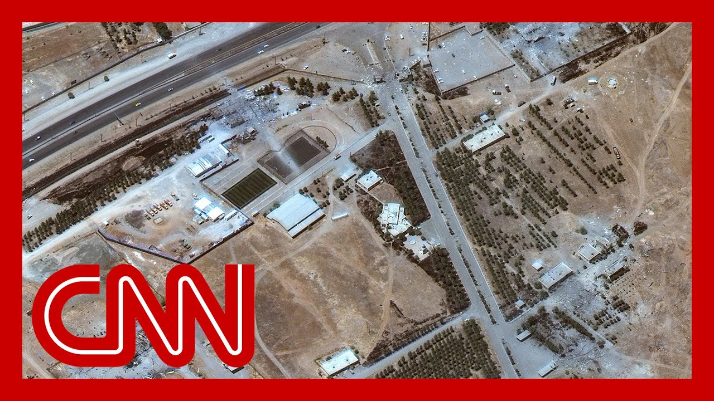

【消息来源：美国情报显示伊朗距离核武器还有数年之遥】
Summary: There are doubts in the intelligence community about Iran's nuclear weapon timeline, with US sources stating Iran was years away from developing both the weapon and delivery system, contradicting urgent warnings from Israel and Trump.
摘要： 情报界对伊朗核武器时间表存在分歧，美国消息称伊朗距离开发核武器及运载系统还需数年，这与以色列和特朗普近期提出的紧迫警告相矛盾。

⏱️ Estimated Reading Time: 14 min
📚 六级生词 📚 雅思生词 📚 托福生词 📚 专八生词 📚 SAT生词 📚 考研生词 📚 GRE生词 📚 高考生词
There is news.
有消息称。
CNN reporting indicate there are doubts in the intelligence community about how close Iran actually is to getting a weapon.
CNN报道显示，情报界对伊朗距离获得核武器的实际进展存在质疑。
CNN's Zach Cohen has this reporting.
CNN的扎克·科恩对此进行了报道。
He's with us now.
他现在与我们连线。
What are you learning, Zach?
扎克，你了解到什么？
Yeah, Jon, there appears to be some daylight between the US intelligence community and Israel.
是的，乔恩，美国情报界与以色列之间似乎存在分歧。
And I guess now Donald Trump on this question of how close Iran is to obtaining a nuclear weapon.
我认为现在特朗普也加入了关于伊朗距离获得核武器有多近的讨论。
And specifically sources telling me and our our colleague Katie Lillis that the intelligence community assessed before the most recent Israeli strikes that Iran was years away, as much as three years away from not only obtaining a nuclear weapon, but developing the system meant to deliver it at a target of its choosing.
具体而言，消息人士告诉我和同事凯蒂·利利斯，情报界在以色列最近发动袭击前评估认为，伊朗不仅距离获得核武器还需数年（可能长达三年），而且距离开发出可自主选择目标的运载系统也需同样时间。
And that does really run counter to the more urgent and dire timeline that Israel and Donald Trump have put forward in recent days.
这与以色列和特朗普近日提出的更紧迫、更严峻的时间表完全相反。
Israel, of course, saying and Israeli Prime Minister Benjamin Netanyahu saying that Iran has been working in secret to develop nuclear weapons over the last several months and that it's very close to having a nuclear weapon.
以色列方面，总理本杰明·内塔尼亚胡称伊朗过去数月一直在秘密研发核武器，且已非常接近拥有核武。
Donald Trump, of course, addressing this question today when he was asked by reporters about his director of National intelligence, Tulsi Gabbard, testimony in March, where she said that Iran is not actively working towards a nuclear weapon.
特朗普今日被记者问及国家情报总监图尔西·加巴德三月作证称伊朗并未积极研发核武器时，也回应了这一问题。
Take a listen to what Donald Trump said when he was asked this question today.
听听特朗普今日被问及此事时的回答。
You've always said that you don't believe Iran should be able to have a nuclear weapon, but how close do you think that they are to getting on?
你一直表示认为伊朗不应拥有核武器，但你觉得他们距离实现还有多远？
Because Tulsi Gabbard, Tulsi Gabbard testified in March that the intelligence community said Iran was building a nuclear weapon.
因为图尔西·加巴德三月作证时称情报界认为伊朗正在建造核武器。
She said, I think they were close to having.
她说，我认为他们已接近拥有。
So why does this matter?
那么这为何重要？
Right.
没错。
Israel has used this sort of urgent warning about Iran's nuclear program as justification for its latest round of preemptive strikes on Iran's nuclear facilities.
以色列正是以这类关于伊朗核计划的紧急警告为由，对伊朗核设施发动了最新一轮先发制人的打击。
Of course, this big question still hangs over the entire situation as to whether or not Donald Trump in the U.S. will become directly involved in the conflict.
当然，整个局势仍悬而未决的问题是：美国的特朗普是否会直接介入冲突。
Donald Trump has said as recently as today that he wants to dismantle Iran's nuclear program.
特朗普最近甚至今日还表示希望瓦解伊朗核计划。
In order to do so.
为实现这一目标。
That will require 1 or 2 things experts tell us either a negotiated deal or U.S. military strikes.
专家表示需要采取一或两种手段：要么通过谈判达成协议，要么实施美军军事打击。
Or is that Cohen?
科恩是这样吗？
Some brand new reporting that fits right in where this story is right now.
这是与当前事态完全吻合的全新报道。
Appreciate your work on this.
感谢你的工作。
Thank you very much.
非常感谢。
With us now is CNN global Affairs analyst Brett McGurk.
现在与我们连线的是CNN全球事务分析师布雷特·麦格克。
He's a former white House coordinator for the Middle East and North Africa, who's been deeply involved in discussions in and around Iran for many, many years.
他曾任白宫中东北非事务协调员，多年来深度参与涉及伊朗的各类讨论。
And, Brett, what I want to focus on is President Trump headed to the Situation Room this morning.
布雷特，我关注的重点是特朗普总统今早前往战情室。
In much of the discussion might be focused around one site in particular, one nuclear site.
讨论可能特别聚焦于某一核设施地点。
I just want to put it on the map here so people can see it's the Fordo nuclear enrichment site.
我在地图上标注出来——这就是福尔多核浓缩设施。
We can push in a little bit to give people a sense of what it looks like.
我们可以放大让观众了解其外观。
The area looks like.
该区域如图所示。
Why is this site so important?
该地点为何如此重要？
Well, John, I think the president should be in the Situation Room today.
约翰，我认为总统今日确实该在战情室。
It's the Situation Room was actually created by JFK after the Bay of pigs fiasco.
战情室正是肯尼迪总统在猪湾事件失败后设立的。
For a situation like this to provide support, full spectrum awareness for president as he makes it has to make critical decisions.
专为当前这类局势设计，以便总统在做出关键决策时获得全方位情报支持。
And there are three immediate priorities.
当前有三个优先事项。
And one of them is what you just mentioned.
其一就是你刚提到的。
But number one, the protection of Americans in the region and the protection of Israel, we have to surge the missile interceptors into Israel.
但首要任务是保护该地区的美国人和以色列安全，我们必须向以色列增派导弹拦截系统。
We're doing that, as Nick just said, a very small number of missiles yesterday.
正如尼克所说，我们正在行动——昨日仅有少量导弹袭击。
It looks like about ten.
数量约十枚。
I can't draw conclusion yet, but the Israelis are taking out not only the missiles, but the launchers.
虽无法定论，但以方不仅拦截了导弹，还摧毁了发射装置。
Very important.
这非常关键。
Second, you want to contain this conflict to Israel and Iran, not have regional spread so far.
其次需将冲突控制在以色列与伊朗之间，避免地区扩散——目前看来目标达成。
That objective is being met.
该目标正在实现。
And I think the signals that the administration is putting out are very good.
我认为政府释放的信号非常积极。
Third, and this gets to your point, you want to keep particularly the Israelis, focused on the stated objectives of this military campaign.
第三点涉及你的问题——尤其要让以色列专注于此次军事行动的既定目标。
The stated objectives are dismantling the nuclear program and the missile program.
既定目标是瓦解核计划与导弹计划。
That's it.
仅此而已。
You want to avoid, mission creep.
必须避免任务蔓延。
Now, on the on the nuclear program, there are three main sites, two enrichment sites, one at Natanz, much of which is above ground, some below ground.
就核计划而言有三个主要设施：两处浓缩基地——纳坦兹基地大部分位于地上，部分地下。
The Israelis appear to have very effectively targeted that site.
以方似乎已有效打击该地点。
The second enrichment facility is an underground facility called Fordo, which you just mentioned deep underground, dug into a mountain.
第二处浓缩设施就是你刚提到的福尔多地下基地——深埋山体之中。
It was an undisclosed facility until 2009, when it was discovered by intelligence and announced Iran has very advanced centrifuges in that facility.
该设施2009年前一直保密，后被情报发现并曝光，伊朗在此部署了非常先进的离心机。
Just last week before this started, they threatened to spin fuel through those advanced centrifuges, enriching just below a weapons grade.
就在冲突爆发前一周，伊朗还威胁启动这些先进离心机进行接近武器级的浓缩活动。
Now to take out that fordo facility.
如今要摧毁福尔多设施。
It really takes a US military operation with a B-2 bomber, and you can see our military actually positioning, for that, that possibility.
确实需要美军动用B-2轰炸机实施行动——可见军方已在为此可能性进行部署。
But there's an off ramp, and the president's made very clear there's a deal on the table.
但存在缓和途径——总统明确表示谈判桌上已有协议草案。
Steve Wyckoff, his envoy, put a deal on the table about six weeks ago.
特使史蒂夫·威科夫约六周前提出该协议。
Iran did not answer that.
伊朗未予回应。
They actually escalated their program in response.
反而升级了核计划作为回应。
And what the president is saying, the white House is saying is to Iran, hey, go back and take a take another look at that.
如今白宫对伊朗喊话：重新考虑这份协议。
Tell us you're ready to take the deal.
告知我方你们准备接受。
and this will be over.
局势就能平息。
So that's where we stand right now.
这就是当前态势。
At the end of the day, John, this has to end with Iran's nuclear program, dismantled.
归根结底，约翰，必须以伊朗核计划被瓦解告终。
And Fordo really is the key.
而福尔多正是关键。
It can be a deal.
可通过协议实现。
We can all hope for a deal, or it can be a military operation against the.
我们都希望和谈成功，否则就只能采取军事行动。
No.
不。
Look at Fordo right here.
请看福尔多此处。
You can see this area.
可见该区域。
Right here is where the centrifuges are believed to be buried deep inside the mountain here in what I was just talking about, is, it's believed that the only way to destroy this is through a U.S. weapon.
此处正是离心机所在——深埋山体，如我所言，据信唯有美军武器能将其摧毁。
The B-2 bombers dropping what's called this this bunker buster bomb, the GBU 57 here.
需B-2轰炸机投掷所谓"碉堡克星"炸弹GBU-57。
How what do you think that discussion is like, Brett, about whether or not the U.S. should get involved here?
布雷特，你认为关于美国是否该介入的讨论会是怎样的？
Benjamin Netanyahu was all but explicitly said, hey, come on, drop this bomb.
内塔尼亚胡几乎明说：快来投弹吧。
Yeah, I have to say that the U.S. military has trained on this for over a decade.
必须承认美军为此训练已超十年。
this munition was kind of designed for this purpose.
该弹药本就是为此目的设计。
Now, look, there have been massive risks about such an operation like this.
当然此类行动存在巨大风险。
Number one, this used to be Hezbollah.
其一，真主党曾拥有15-20万枚瞄准以色列的导弹火箭。
Hezbollah had 150,000 to 200,000 missiles and rockets aiming at Israel.
真主党曾拥有15-20万枚瞄准以色列的导弹火箭。
Hezbollah has been knocked on his back.
如今真主党已遭重创。
Number two has been Iranian air defense is a Russian air defense systems very high risk of taking down airplanes.
其二，伊朗防空系统采用俄制装备，曾对军机构成极高风险。
Those are no longer there.
如今这些威胁已不存在。
So those risks have basically been eliminated.
因此这些风险基本消除。
Iran can certainly respond.
伊朗当然可能反击。
I would never downplay the risks of any military operation, but I would just say this is a very feasible option.
我从不轻视军事行动风险，但必须说这是个非常可行的选项。
Iran knows it.
伊朗心知肚明。
It's important they know it for the purpose of trying to get a diplomatic resolution to this problem.
让他们明白这点很重要——这有助于推动外交解决。
And the problem for though I think that right now is the main objective, but it takes the military pressure to get around to the table and to do that deal.
当前主要目标仍是解决问题——但需要军事施压才能促使他们回到谈判桌达成协议。
This is really going to unfold here over the next 3 to 4 days.
未来3-4天局势将见分晓。
I think it's a it's a very critical period I'm watching today.
我认为这是极其关键时期——我正密切关注今日动态。
Can Iran again muster another missile barrage?
伊朗能否再次组织导弹袭击？
Are they really now, depleted in Brett, you use the term coercive diplomacy.
他们现在是否真的战力耗尽？布雷特，你用了"强制外交"一词。
That's what's happening here.
这正是当前态势。
What is that exactly?
具体指什么？
Well, coercive diplomacy is what, you know, this administration, past administrations have used fairly effectively with the Iranians.
强制外交是本届及往届政府对伊朗相当有效的策略。
Number one, economic sanctions, economic pressure.
首先是经济制裁与经济施压。
And number two, the threat of of a military force if Iran, does not demonstrate to the world this program is peaceful.
其次是军事力量威胁——若伊朗无法向世界证明其核计划是和平的。
And I just have to say, last week, John, the IAEA issued a report, very comprehensive report it was asked for last year, and they found Iran to be an egregious failure, to live up to its nonproliferation commitments and 19 countries and voted in the board of governors in Vienna and the IAEA, the International Atomic Energy Agency, that Iran was in violation of its obligations first time in 20 years.
必须补充：上周国际原子能机构应去年要求发布全面报告，认定伊朗严重违反防扩散承诺——19国在IAEA理事会投票认定伊朗20年来首次违约。
What did Iran do?
伊朗作何反应？
it announced escalations of its program, including in that Fordo site.
他们宣布升级核计划——包括福尔多设施。
Yeah.
是的。
So Iran has made terrible choices here.
因此伊朗在此问题上做出了糟糕选择。
and now the onus is on them to try to come to the table and take the deal that's been offered.
现在责任在他们——应回到谈判桌接受已提出的协议。
Yeah.
没错。
Next 24 hours.
未来24小时。
Next 48 hours.
未来48小时。
So crucial.
至关重要。
Brett McGurk, thank you so much for helping us understand what's happening.
布雷特·麦格克，非常感谢你帮助我们理解当前局势。
Probably in the Situation Room as we speak this morning.
此刻战情室可能正在讨论这些。